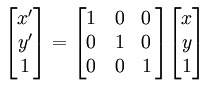

Resetovanje transformacije u Canvas-u
U HTML5 Canvas-u se resetovanje transformacije postiže pozivom metode setTransform() koristeći sledeću matricu transformacije:

U sledećem primeru se resetuje transliran pravougaonik za polovinu dužine i polovinu visine Canvas elementa.
<canvas id="myCanvas" width="578" height="200"></canvas>
<script>
var canvas = document.getElementById('myCanvas');
var context = canvas.getContext('2d');
var rectWidth = 150;
var rectHeight = 75;
context.translate(canvas.width / 2, canvas.height / 2);
context.fillStyle = 'blue';
context.fillRect(-rectWidth / 2, rectHeight / -2, rectWidth, rectHeight);
// 1 0 0
// 0 1 0
// 0 0 1
context.setTransform(1, 0, 0, 1, 0, 0);
context.fillStyle = 'red';
context.fillRect(0, 0, rectWidth, rectHeight);
</script>